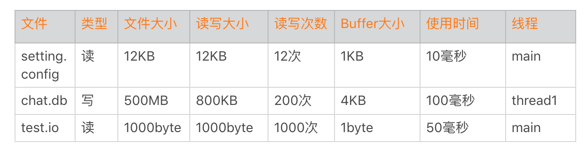
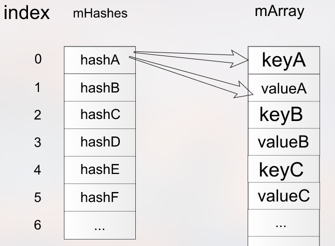
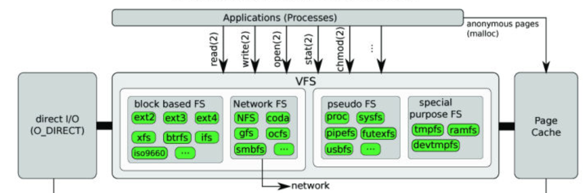
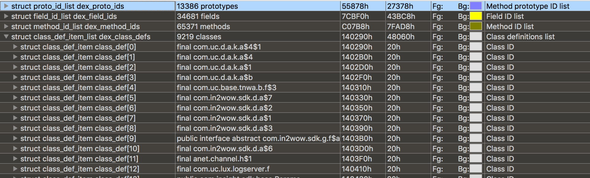
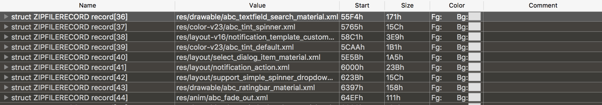
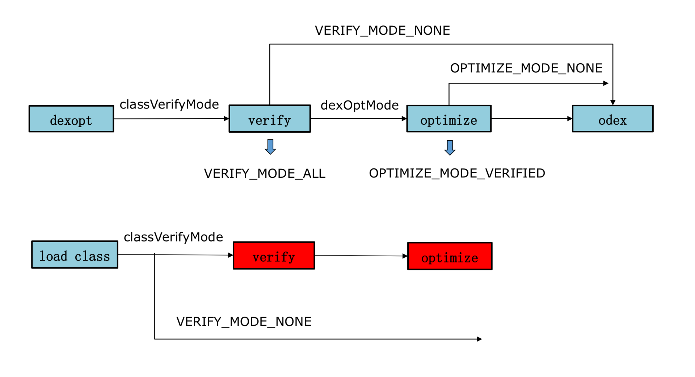
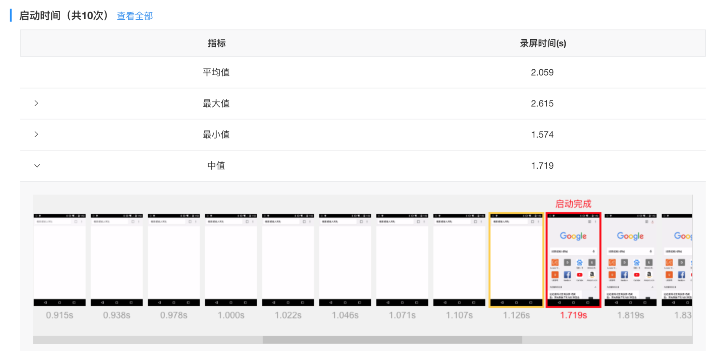
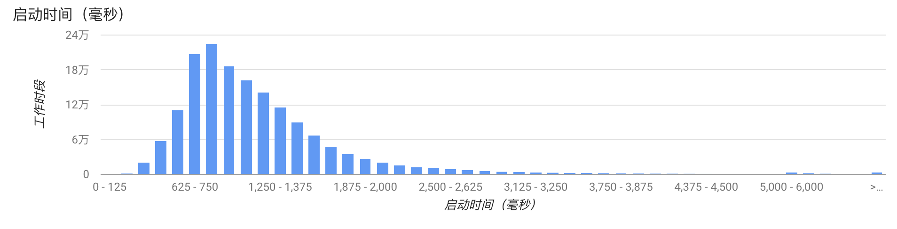

- 00 导读 如何打造高质量的应用？.md
- 00 开篇词 焦虑的移动开发者该如何破局？.md
- 01 崩溃优化（上）：关于“崩溃”那些事儿.md
- 02 崩溃优化（下）：应用崩溃了，你应该如何去分析？.md
- 03 内存优化（上）：4GB内存时代，再谈内存优化.md
- 04 内存优化（下）：内存优化这件事，应该从哪里着手？.md
- 05 卡顿优化（上）：你要掌握的卡顿分析方法.md
- 06 卡顿优化（下）：如何监控应用卡顿？.md
- 06补充篇 卡顿优化：卡顿现场与卡顿分析.md
- 07 启动优化（上）：从启动过程看启动速度优化.md
- 08 启动优化（下）：优化启动速度的进阶方法.md
- 09 I_O优化（上）：开发工程师必备的I_O优化知识.md
- 10 I_O优化（中）：不同I_O方式的使用场景是什么？.md
- 11 I_O优化（下）：如何监控线上I_O操作？.md
- 12 存储优化（上）：常见的数据存储方法有哪些？.md
- 13 存储优化（中）：如何优化数据存储？.md
- 14 存储优化（下）：数据库SQLite的使用和优化.md
- 15 网络优化（上）：移动开发工程师必备的网络优化知识.md
- 16 网络优化（中）：复杂多变的移动网络该如何优化？.md
- 17 网络优化（下）：大数据下网络该如何监控？.md
- 18 耗电优化（上）：从电量优化的演进看耗电分析.md
- 19 耗电优化（下）：耗电的优化方法与线上监控.md
- 20 UI 优化（上）：UI 渲染的几个关键概念.md
- 21 UI 优化（下）：如何优化 UI 渲染？.md
- 22 包体积优化（上）：如何减少安装包大小？.md
- 23 包体积优化（下）：资源优化的进阶实践.md
- 24 想成为Android高手，你需要先搞定这三个问题.md
- 25 如何提升组织与个人的研发效能？.md
- 26 关于编译，你需要了解什么？.md
- 27 编译插桩的三种方法：AspectJ、ASM、ReDex.md
- 28 大数据与AI，如何高效地测试？.md
- 29 从每月到每天，如何给版本发布提速？.md
- 30 数据评估（上）：如何实现高可用的上报组件？.md
- 31 数据评估（下）：什么是大数据平台？.md
- 32 线上疑难问题该如何排查和跟踪？.md
- 33 做一名有高度的移动开发工程师.md
- 34 聊聊重构：优秀的架构都是演进而来的.md
- 35 Native Hook 技术，天使还是魔鬼？.md
- 36 跨平台开发的现状与应用.md
- 37 移动开发新大陆：工作三年半，移动开发转型手游开发.md
- 38 移动开发新大陆：Android音视频开发.md
- 39 移动开发新大陆： 边缘智能计算的趋势.md
- 40 动态化实践，如何选择适合自己的方案？.md
- 41 聊聊Flutter，面对层出不穷的新技术该如何跟进？.md
- 42 Android开发高手课学习心得.md
- Android JVM TI机制详解（内含福利彩蛋）.md
- Android工程师的“面试指南”.md
- Native下如何获取调用栈？.md
- 专栏学得苦？可能你还需要一份配套学习书单.md
- 专栏学得苦？可能是方法没找对.md
- 程序员修炼之路 设计能力的提升途径.md
- 练习Sample跑起来 ASM插桩强化练习.md
- 练习Sample跑起来 唯鹿同学的练习手记 第1辑.md
- 练习Sample跑起来 唯鹿同学的练习手记 第2辑.md
- 练习Sample跑起来 唯鹿同学的练习手记 第3辑.md
- 练习Sample跑起来 热点问题答疑第1期.md
- 练习Sample跑起来 热点问题答疑第2期.md
- 练习Sample跑起来 热点问题答疑第3期.md
- 练习Sample跑起来 热点问题答疑第4期.md
- 结束语 移动开发的今天和明天.md
- 聊聊Framework的学习方法.md
08 启动优化（下）：优化启动速度的进阶方法
专栏上一期，我们一起梳理了应用启动的整个过程和问题，也讲了一些启动优化方法，可以说是完成了启动优化工作最难的一部分。还可以通过删掉或延后一些不必要的业务，来实现相关具体业务的优化。你学会了这些工具和方法，是不是觉得效果非常不错，然后美滋滋地向老大汇报工作成果：“启动速度提升30%，秒杀所有竞品好几条街”。
“还有什么方法可以做进一步优化吗？怎么证明你秒杀所有的竞品？如何在线上衡量启动优化的效果？怎么保障和监控启动速度是否变慢？”，老大一口气问了四个问题。
面对这四个问题，你可不能一脸懵。我们的应用启动是不是真的已经做到了极致？如何保证启动优化成果是长期有效的？让我们通过今天的学习，一起来回答老大这些问题吧。
启动进阶方法
除了上期讲的常规的优化方法，我还有一些与业务无关的“压箱底”方法可以帮助加快应用的启动速度。当然有些方法会用到一些黑科技，它就像一把双刃剑，需要你做深入的评估和测试。
1. I/O 优化
在负载过高的时候，I/O性能下降得会比较快。特别是对于低端机，同样的I/O操作耗时可能是高端机器的几十倍。启动过程不建议出现网络I/O，相比之下，磁盘I/O是启动优化一定要抠的点。首先我们要清楚启动过程读了什么文件、多少个字节、Buffer是多大、使用了多长时间、在什么线程等一系列信息。

那么如何实现I/O的监控呢？我今天先卖个关子，下一期我会详细和你聊聊I/O方面的知识。
通过上面的数据，我们发现chat.db的大小竟然达到500MB。我们经常发现本地启动明明非常快，为什么线上有些用户就那么慢？这可能是一些用户本地积累了非常多的数据，我们也发现有些微信的重度用户，他的DB文件竟然会超过1GB。所以，重度用户是启动优化一定要覆盖的群体，我们要做一些特殊的优化策略。
还有一个是数据结构的选择问题，我们在启动过程只需要读取Setting.sp的几项数据，不过SharedPreference在初始化的时候还是要全部数据一起解析。如果它的数据量超过1000条，启动过程解析时间可能就超过100毫秒。如果只解析启动过程用到的数据项则会很大程度减少解析时间，启动过程适合使用随机读写的数据结构。

可以将ArrayMap改造成支持随机读写、延时解析的数据存储方式。同样我们今天也不再展开这部分内容，这些知识会在存储优化的相关章节进一步展开。
2. 数据重排
在上面的表格里面，我们读取test.io文件中1KB数据，因为Buffer不小心写成了1 byte，总共要读取1000次。那系统是不是真的会读1000次磁盘呢？
事实上1000次读操作只是我们发起的次数，并不是真正的磁盘I/O次数。你可以参考下面Linux文件I/O流程。

Linux文件系统从磁盘读文件的时候，会以block为单位去磁盘读取，一般block大小是4KB。也就是说一次磁盘读写大小至少是4KB，然后会把4KB数据放到页缓存Page Cache中。如果下次读取文件数据已经在页缓存中，那就不会发生真实的磁盘I/O，而是直接从页缓存中读取，大大提升了读的速度。所以上面的例子，我们虽然读了1000次，但事实上只会发生一次磁盘I/O，其他的数据都会在页缓存中得到。
Dex文件用的到的类和安装包APK里面各种资源文件一般都比较小，但是读取非常频繁。我们可以利用系统这个机制将它们按照读取顺序重新排列，减少真实的磁盘I/O次数。
类重排
启动过程类加载顺序可以通过复写ClassLoader得到。
class GetClassLoader extends PathClassLoader {
public Class<?> findClass(String name) {
// 将 name 记录到文件
writeToFile(name，"coldstart_classes.txt");
return super.findClass(name);
}
}
然后通过ReDex的Interdex调整类在Dex中的排列顺序，最后可以利用010 Editor查看修改后的效果。

我多次提到的ReDex，是Facebook开源的Dex优化工具，它里面有非常多好用的东西，后续我们会有更详细的介绍。
资源文件重排
Facebook在比较早的时候就使用“资源热图”来实现资源文件的重排，最近支付宝在《通过安装包重排布优化Android端启动性能》中也详细讲述了资源重排的原理和落地方法。
在实现上，它们都是通过修改Kernel源码，单独编译了一个特殊的ROM。这样做的目的有三个：
统计。统计应用启动过程加载了安装包中哪些资源文件，比如assets、drawable、layout等。跟类重排一样，我们可以得到一个资源加载的顺序列表。
度量。在完成资源顺序重排后，我们需要确定是否真正生效。比如有哪些资源文件加载了，它是发生真实的磁盘I/O，还是命中了Page Cache。
自动化。任何代码提交都有可能改变启动过程中类和资源的加载顺序，如果完全依靠人工手动处理，这个事情很难持续下去。通过定制ROM的一些埋点和配合的工具，我们可以将它们放到自动化流程当中。
跟前面提到的Nanoscope耗时分析工具一样，当系统无法满足我们的优化需求时，就需要直接修改ROM的实现。Facebook“资源热图”相对比较完善，也建设了一些配套的Dashboard工具，希望后续可以开源出来。
事实上如果仅仅为了统计，我们也可以使用Hook的方式。下面是利用Frida实现获得Android资源加载顺序的方法，不过Frida还是相对小众，后面会替换其他更加成熟的Hook框架。
resourceImpl.loadXmlResourceParser.implementation=function(a,b,c,d){
send('file:'+a)
return this.loadXmlResourceParser(a,b,c,d)
}
resourceImpl.loadDrawableForCookie.implementation=function(a,b,c,d,e){
send("file:"+a)
return this.loadDrawableForCookie(a,b,c,d,e)
}
调整安装包文件排列需要修改7zip源码实现支持传入文件列表顺序，同样最后可以利用010 Editor查看修改后的效果。

这两个优化可能会带来100～200毫秒的提高，我们还可以大大减少启动过程I/O的时间波动。特别是对于中低端机器来说，经常发现启动时间波动非常大，这个波动跟CPU调度相关，但更多时候是跟I/O相关。
可能有同学会问，这些优化思路究竟是怎么样想出来的呢？其实利用文件系统和磁盘读取机制的优化思路，在服务端和Windows上早已经不是什么新鲜事。所谓的创新，不一定是创造前所未有的东西。我们将已有的方案移植到新的平台，并且很好地结合该平台的特性将其落地，就是一个很大的创新。
3. 类的加载
在WeMobileDev公众号发布的《微信Android热补丁实践演进之路》中，我提过在加载类的过程有一个verify class的步骤，它需要校验方法的每一个指令，是一个比较耗时的操作。

我们可以通过Hook来去掉verify这个步骤，这对启动速度有几十毫秒的优化。不过我想说，其实最大的优化场景在于首次和覆盖安装时。以Dalvik平台为例，一个2MB的Dex正常需要350毫秒，将classVerifyMode设为VERIFY_MODE_NONE后，只需要150毫秒，节省超过50%的时间。
// Dalvik Globals.h
gDvm.classVerifyMode = VERIFY_MODE_NONE;
// Art runtime.cc
verify_ = verifier::VerifyMode::kNone;
但是ART平台要复杂很多，Hook需要兼容几个版本。而且在安装时大部分Dex已经优化好了，去掉ART平台的verify只会对动态加载的Dex带来一些好处。Atlas中的dalvik_hack-3.0.0.5.jar可以通过下面的方法去掉verify，但是当前没有支持ART平台。
AndroidRuntime runtime = AndroidRuntime.getInstance();
runtime.init(context);
runtime.setVerificationEnabled(false);
这个黑科技可以大大降低首次启动的速度，代价是对后续运行会产生轻微的影响。同时也要考虑兼容性问题，暂时不建议在ART平台使用。
4. 黑科技
第一，保活
讲到黑科技，你可能第一个想到的就是保活。保活可以减少Application创建跟初始化的时间，让冷启动变成温启动。不过在Target 26之后，保活的确变得越来越难。
对于大厂来说，可能需要寻求厂商合作的机会，例如微信的Hardcoder方案和OPPO推出的Hyper Boost方案。根据OPPO的数据，对于手机QQ、淘宝、微信启动场景会直接有20%以上的优化。
有的时候你问为什么微信可以保活？为什么它可以运行的那么流畅？这里可能不仅仅是技术上的问题，当应用体量足够大，就可以倒逼厂商去专门为它们做优化。
第二，插件化和热修复
从2012年开始，淘宝、微信尝试做插件化的探索。到了2015年，淘宝的Dexposed、支付宝的AndFix以及微信的Tinker等热修复技术开始“百花齐放”。
它们真的那么好吗？事实上大部分的框架在设计上都存在大量的Hook和私有API调用，带来的缺点主要有两个：
稳定性。虽然大家都号称兼容100%的机型，由于厂商的兼容性、安装失败、dex2oat失败等原因，还是会有那么一些代码和资源的异常。Android P推出的non-sdk-interface调用限制，以后适配只会越来越难，成本越来越高。
性能。Android Runtime每个版本都有很多的优化，因为插件化和热修复用到的一些黑科技，导致底层Runtime的优化我们是享受不到的。Tinker框架在加载补丁后，应用启动速度会降低5%～10%。
应用加固对启动速度来说简直是灾难，有时候我们需要做一些权衡和选择。为了提升启动速度，支付宝也提出一种GC抑制的方案。不过首先Android 5.0以下的系统占比已经不高，其次这也会带来一些兼容性问题。我们还是更希望通过手段可以真正优化整个耗时，而不是一些取巧的方式。
总的来说，对于黑科技我们需要慎重，当你足够了解它们内部的机制以后，可以选择性的使用。
启动监控
终于千辛万苦的优化好了，我们还要找一套合理、准确的方法来度量优化的成果。同时还要对它做全方位的监控，以免被人破坏劳动果实。
1. 实验室监控
如果想客观地反映启动的耗时，视频录制会是一个非常好的选择。特别是我们很难拿到竞品的线上数据，所以实验室监控也非常适合做竞品的对比测试。
它的难点在于如何让实验系统准确地找到启动结束的点，这里可以通过下面两种方式。
80%绘制。当页面绘制超过80%的时候认为是启动完成，不过可能会把闪屏当成启动结束的点，不一定是我们所期望的。
图像识别。手动输入一张启动结束的图片，当实验系统认为当前截屏页面有80%以上相似度时，就认为是启动结束。这种方法更加灵活可控，但是实现难度会稍微高一点。

启动的实验室监控可以定期自动去跑，需要注意的是，我们应该覆盖高、中、低端机不同的场景。但是使用录屏的方式也有一个缺陷，就是出现问题时我们需要人工二次定位具体是什么代码所导致的。
2. 线上监控
实验室覆盖的场景和机型还是有限的，是驴是马我们还是要发布到线上进行验证。针对线上，启动监控会更加复杂一些。Android Vitals可以对应用冷启动、温启动时间做监控。

事实上，每个应用启动的流程都非常复杂，上面的图并不能真实反映每个应用的启动耗时。启动耗时的计算需要考虑非常多的细节，比如：
启动结束的统计时机。是否是使用用户真正可以操作的时间作为启动结束的时间。
启动时间扣除的逻辑。闪屏、广告和新手引导这些时间都应该从启动时间里扣除。
启动排除逻辑。Broadcast、Server拉起，启动过程进入后台这些都需要排除出统计。
经过精密的扣除和排除逻辑，我们最终可以得到用户的线上启动耗时。正如我在上一期所说的，准确的启动耗时统计是非常重要的。有很多优化在实验室完成之后，还需要在线上灰度验证效果。这个前提是启动统计是准确的，整个效果评估是真实的。
那我们一般使用什么指标来衡量启动速度的快慢呢？
很多应用采用平均启动时间，不过这个指标其实并不太好，一些体验很差的用户很有可能是被平均了。我更建议使用类似下面的指标：
快开慢开比。例如2秒快开比、5秒慢开比，我们可以看到有多少比例的用户体验非常好，多少比例的用户比较槽糕。
90%用户的启动时间。如果90%的用户启动时间都小于5秒，那么我们90%区间启动耗时就是5秒。
此外我们还要区分启动的类型。这里要统计首次安装启动、覆盖安装启动、冷启动和温启动这些类型，一般我们都使用普通的冷启动时间作为指标。另一方面热启动的占比也可以反映出我们程序的活跃或保活能力。
除了指标的监控，启动的线上堆栈监控更加困难。Facebook会利用Profilo工具对启动的整个流程耗时做监控，并且在后台直接对不同的版本做自动化对比，监控新版本是否有新增耗时的函数。
总结
今天我们学习了一些与业务无关的启动优化方法，可以进一步减少启动耗时，特别是减少磁盘I/O可能带来的波动。然后我们探讨了一些黑科技对启动的影响，对于黑科技我们需要两面看，在选择时也要慎重。最后我们探讨了如何在实验室和线上更好地测量和监控启动速度。
启动优化需要耐得住寂寞，把整个流程摸清摸透，一点点把时间抠出来，特别是对于低端机和系统繁忙的场景。而数据重排的优化，对我有非常大的启发，帮助我开发了一个新的方向。也让我明白了，当我们足够熟悉底层的知识时，可以利用系统的特性去做更加深层次的优化。
不管怎么说，你都需要谨记一点：对于启动优化要警惕KPI化，我们要解决的不是一个数字，而是用户真正的体验问题。
看完我分享的启动优化的方法后，相信你肯定也还有很多好的思路和方法。今天的课后作业是分享一下你“压箱底”的启动优化“秘籍”，在留言区分享一下今天学习、练习的收获与心得。
课后练习
今天我们的Sample是如何在Dalvik去掉verify，你可以顺着这个思路尝试去分析Dalvik虚拟机加载Dex和类的流程。
欢迎你点击“请朋友读”，把今天的内容分享给好友，邀请他一起学习。最后别忘了在评论区提交今天的作业，我也为认真完成作业的同学准备了丰厚的“学习加油礼包”，期待与你一起切磋进步哦。
© 2019 - 2023 Liangliang Lee. Powered by gin and hexo-theme-book.